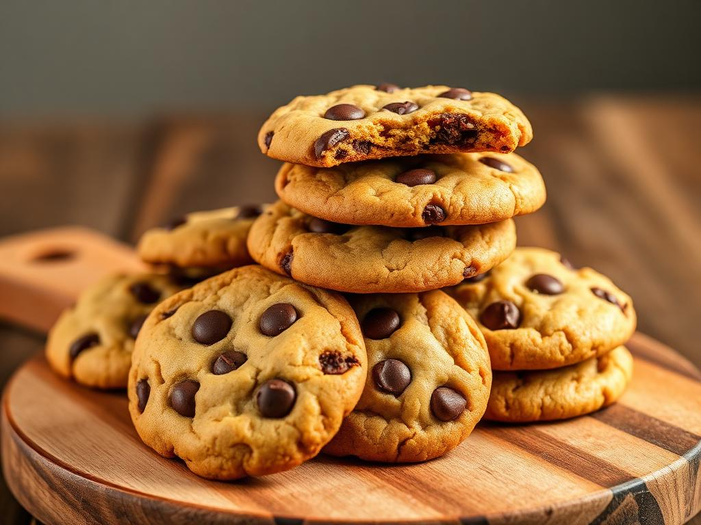

Chocolate Chip Cookies

Description
Soft, chewy chocolate chip cookies packed with rich, melty chocolate
chunks. Perfectly golden on the outside and gooey in the center — a
timeless treat for any occasion.
Ingredients
- 2 1/4 cups all-purpose flour
- 1 teaspoon baking soda
- 1/2 teaspoon salt
- 1 cup unsalted butter, softened
- 3/4 cup brown sugar
- 1/2 cup granulated sugar
- 2 teaspoons vanilla extract
- 2 large eggs
- 2 cups chocolate chips
Steps
- Preheat the oven to 350°F (175°C).
- In a bowl, whisk together flour, baking soda, and salt.
-
In another bowl, beat butter, brown sugar, and granulated sugar until
creamy.
- Add vanilla and eggs one at a time, mixing well after each.
- Gradually add dry ingredients and mix until combined.
- Stir in chocolate chips.
-
Drop spoonfuls of dough onto a baking sheet lined with parchment paper.
- Bake for 9–11 minutes until golden brown at the edges.
- Cool on a wire rack and enjoy!
← Back to Homepage